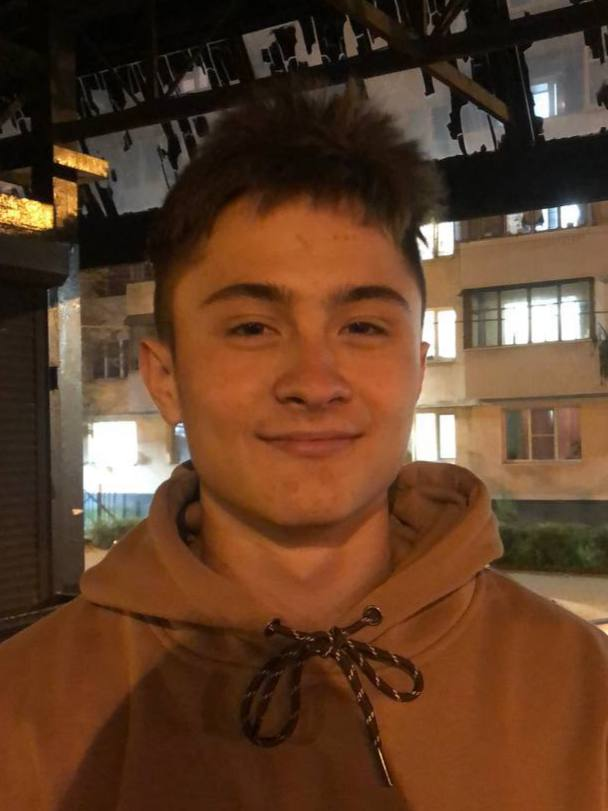

◄
Информация об авторе сайта

Есиков Владимир Романович
Студент первого курса ВГУ ФКН ИСИТ группы 3.2. Родился 13 декабря 2005 года. Сайт сделал полностью сам. В написании содержания сайта принимал участие финский анекдот мейкер Vin Vinovih Mattarochchi.